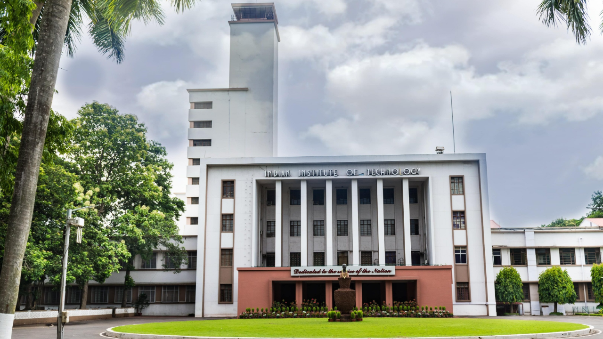
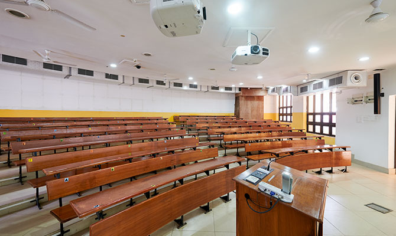
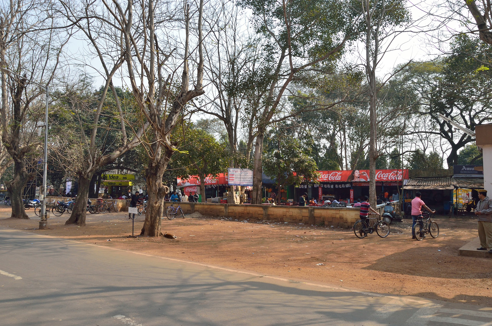

In this webpage, I have briefly written about my three favourite places within IIT Kharagpur. They are:
The Main Building
Nalanda Classroom Complex
Tikka

The Main Building:
The main building is the heart of IIT Kharagpur. Seeing the main building reminds me of what I've accomplished as an individual and what more I can achieve through this amazing oppurtunity provided to me. One of the things that makes the main building special is the Central Library. It is a calm and a peaeful hangout place for people who want to focus on something specific, but arre unable to do so because of the chaos outside.

Nalanda Classroom complex:
The fact that thousands of students attend classes simultaneously within a single complex fascinates me. The way the Nalanda complex is built and organised is simply brilliant in my opinion. Besides, that's where I get to interact with most of my friends other than my hall. Hence, it is one of my favourites.

Tikka:
Coming from a Southern state, I am obsessed with Dosa and Tikka is very well known for the quality and affordability of their Dosas. Everytime I go there and have a Dosa, it reminds me of my home and hence it has a special place in my heart.